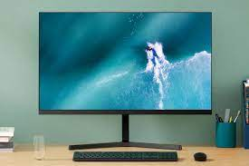

El monitor de PC, también llamado pantalla, monitor de ordenador y monitor de computadora, es el principal dispositivo de salida (interfaz), que muestra datos o información a todos los usuarios.
También puede considerarse un periférico de entrada/salida si el monitor tiene pantalla táctil o multitáctil.